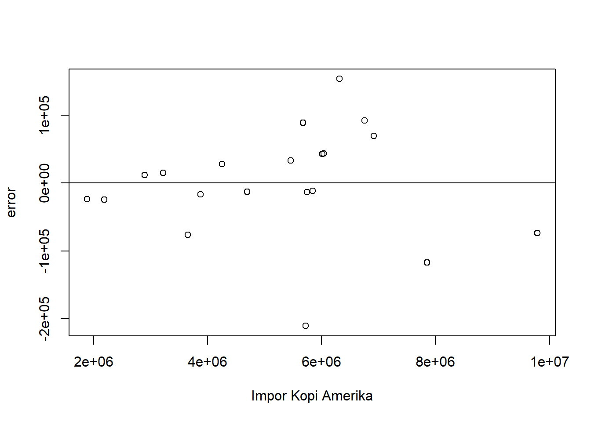

setwd("D:/METOPEL UAS/FADHIA METOPEL")
library(readxl)
library(tidyverse)
library(kableExtra)Pengaruh Impor Kopi Negara-negara maju terhadap kinerja Ekspor Kopi Indonesia
Metode Penelitian Politeknik APP Jakarta

1 Pendahuluan
1.1 Latar belakang
Berikut adalah latar belakang makalah penelitian yang Anda minta:
Indonesia dikenal sebagai salah satu produsen kopi terbesar di dunia. Dengan berbagai jenis kopi yang dihasilkan, seperti Arabika dan Robusta, Indonesia telah berhasil mengekspor kopi ke berbagai negara di Asia dan Eropa. Karakteristik kopi Indonesia yang unik, seperti rasa dan aroma yang khas, menjadikannya diminati oleh banyak negara.
Amerika, Jerman, Italia, Jepang, dan Korea Selatan adalah beberapa negara yang banyak mengimpor kopi, termasuk dari Indonesia. Menurut data International Coffee Organization (ICO), pada tahun 2019, jumlah ekspor kopi Indonesia mencapai sekitar 6.334 karung kopi ukuran 60 kg atau sekitar 380 ton kopi³. Sementara itu, menurut data Asosiasi Eksportir Kopi Indonesia (AEKI), Jepang telah mengimpor 55 ribu ton kopi lokal senilai US$ 161,101 juta¹⁷.
Namun, meskipun Indonesia memiliki potensi besar dalam ekspor kopi, masih ada tantangan yang dihadapi. Salah satunya adalah pengaruh impor kopi oleh negara-negara maju terhadap ekspor kopi Indonesia. Oleh karena itu, penelitian ini bertujuan untuk menganalisis pengaruh impor kopi negara maju terhadap ekspor kopi Indonesia.
Metode yang akan digunakan dalam penelitian ini adalah regresi linear berganda. Metode ini dipilih karena dapat digunakan untuk menganalisis hubungan antara dua atau lebih variabel. Dalam konteks penelitian ini, variabel-variabel tersebut adalah impor kopi oleh negara-negara maju dan ekspor kopi Indonesia.
Dengan demikian, penelitian ini diharapkan dapat memberikan pemahaman yang lebih baik tentang dinamika pasar kopi global dan bagaimana hal tersebut mempengaruhi ekspor kopi Indonesia. Hasil penelitian ini juga diharapkan dapat menjadi referensi bagi para pelaku industri kopi di Indonesia dalam merumuskan strategi ekspor yang lebih efektif dan efisien.
1.2 Ruang lingkup
Ruang lingkup dari penelitian ini mencakup beberapa aspek berikut:
Produksi dan Ekspor Kopi Indonesia: Penelitian ini akan membahas tentang produksi kopi di Indonesia dan bagaimana Indonesia menjadi salah satu pengekspor kopi terbesar di dunia.
Negara Tujuan Ekspor: Fokus penelitian ini adalah pada negara-negara maju yang banyak mengimpor kopi, seperti Amerika Serikat, Jerman, Italia, serta negara-negara Asia seperti Jepang dan Korea Selatan.
Pengaruh Impor Kopi Negara Maju: Bagian penting dari penelitian ini adalah analisis tentang bagaimana impor kopi oleh negara-negara maju mempengaruhi ekspor kopi Indonesia.
Metode Penelitian: Penelitian ini akan menggunakan metode regresi linear berganda untuk menganalisis hubungan antara impor kopi oleh negara-negara maju dan ekspor kopi Indonesia.
Dengan demikian, penelitian ini diharapkan dapat memberikan pemahaman yang lebih baik tentang dinamika pasar kopi global dan bagaimana hal tersebut mempengaruhi ekspor kopi Indonesia. Hasil penelitian ini juga diharapkan dapat menjadi referensi bagi para pelaku industri kopi di Indonesia dalam merumuskan strategi ekspor yang lebih efektif dan efisien.
1.3 Rumusan masalah
Berikut adalah rumusan masalah untuk penelitian dengan judul “Pengaruh Impor Kopi Negara-negara Maju terhadap kinerja Ekspor Kopi Indonesia”:
Bagaimana produksi dan ekspor kopi Indonesia berpengaruh terhadap pasar kopi global?
Bagaimana impor kopi oleh negara-negara maju seperti Amerika Serikat, Jerman, Italia, Jepang, dan Korea Selatan mempengaruhi ekspor kopi Indonesia?
Apa saja faktor-faktor yang mempengaruhi impor kopi oleh negara-negara maju dan bagaimana pengaruhnya terhadap ekspor kopi Indonesia?
Bagaimana metode regresi linear berganda dapat digunakan untuk menganalisis hubungan antara impor kopi oleh negara-negara maju dan ekspor kopi Indonesia?
1.4 Tujuan dan manfaat penelitian
Berikut adalah tujuan dan manfaat penelitian dengan judul “Pengaruh Impor Kopi Negara Maju terhadap Ekspor Kopi Indonesia” dari sisi mahasiswa:
Tujuan Penelitian:
Memahami dinamika pasar kopi global dan bagaimana impor kopi oleh negara-negara maju mempengaruhi ekspor kopi Indonesia.
Mengaplikasikan metode regresi linear berganda dalam konteks penelitian ekonomi internasional.
Menganalisis data ekspor dan impor kopi untuk mendapatkan wawasan yang lebih baik tentang pola perdagangan kopi.
Manfaat Penelitian:
Peningkatan Pengetahuan: Penelitian ini dapat membantu mahasiswa memahami lebih dalam tentang perdagangan internasional, khususnya dalam konteks kopi. Ini juga memberikan kesempatan untuk mempelajari dan menerapkan metode regresi linear berganda dalam penelitian.
Keterampilan Analisis Data: Melalui penelitian ini, mahasiswa dapat mengasah keterampilan dalam mengumpulkan, mengolah, dan menganalisis data ekspor dan impor.
Penerapan Teori ke Praktik: Penelitian ini memungkinkan mahasiswa untuk menerapkan konsep dan teori yang dipelajari di kelas ke situasi dunia nyata.
Kontribusi untuk Industri Kopi: Hasil penelitian ini dapat menjadi referensi bagi pelaku industri kopi di Indonesia dalam merumuskan strategi ekspor yang lebih efektif dan efisien.
1.5 Package
2 Studi pustaka
Menurut Tan (2009) ekspor merupakan suatu aktivitas menjual produk dari suatu negara kenegara lain. Jadi pada dasarnya tujuan ekspor unntuk mendapatkan atau memperoleh devisa yang berupa mata uang asing yang digunakan dalam meningkatkan PDB (produk Domestik Bruto) dan pertumbuhan ekonomi. Ekspor adalah barang dan jasa yang di jual kepada penduduk negara lain ditambah dengan jasa-jasa yang diselenggarakan kepada penduduk negara tersebut berupa pengangkatan kapal, permodalan dan hal-hal lain yang membantu ekspor tersebut. Gagasan utama terjadinya perdagangan internasional adalah adanya perbedaan potensi sumber-sumber daya yang dimiliki oleh setiap negara. Hal ini merupakan suatu landasan teori yang sangat berpengaruh dalam ilmu ekonomi internasional. Perdagangan Internasional adalah perdagangan yang dilakukan oleh penduduk suatu negara dengan penduduk negara lain atas dasar kesepakatan bersama. Penduduk yang dimaksud dapat berupa antar perorangan (individu dengan individu), antara individu dengan pemerintah suatu negara atau pemerintah suatu negara dengan pemerintah negara lain.
Berdasarkan teori perdagangan internasional, motivasi utama melakukan perdagangan adalah memperoleh keuntungan yang timbul dengan adanya perdagangan internasional (Salvatore, 1997). Kegiatan perdagangan yang terjadi antar negara menunjukkan bahwa negara-negara tersebut telah memiliki sistem perekonomian yang terbuka. Perdagangan ini terjadi akibat adanya usaha untuk memaksimumkan kesejahteraan negara dan diharapkan dampak kesejahteraan tersebut akan diterima oleh negara pengekspor dan pengimpor.
Indonesia merupakan Negara penghasil kopi terbesar keempat di dunia pada tahun 2015, yang pada urutan pertama adalah Negara Brazil, urutan kedua adalah Negara Vietnam dan pada urutan ketiga adalah Negara Kolombia (FAOSTAT, 2016). Luas lahan perkebunan kopi diIndonesia mencapai 1,3 juta hektar dengan luas lahan perkebunan kopi robusta mencapai 1 juta hektar dan luas lahan perkebunan kopi arabika mencapai 0,30 juta hektar (Rahardjo,2012).
Salah satu komoditi ekspor subsektor perkebunan yang memegang peranan penting adalah kopi. Kopi merupakan komoditi unggulan Indonesia dan merupakan sumber devisa, penyedia lapangan kerja dan sebagai sumber pendapatan bagi petani dan pelaku ekonomi lainnya yang berhubungan dengan pembudidayaan, pengolahan, dan pemasaran biji kopi, khususnya di daerah-daerah penghasil kopi terbesar seperti Sumatera Selatan, Lampung, Sumatera Utara, dan Jawa Timur (Turnip 2002).
Dalam persaingan pasar Internasional, terdapat Brazil, Vietnam serta Kolombia yang memiliki nilai ekspor tinggi. Tahun 2013 volume ekspor Brazil mencapai 1.571.831 ton sedangkan Vietnam dikenal dengan produktivitas perkebunan kopi yang tinggi (FAOSTAT, 2016). Daya saing antar negara dalam perdagangan internasional semakin ketat terutama untuk komoditas kopi. Meningkatnya produsen dan pengekspor kopi di dunia berarti meningkatkan pula persaingan dalam memenangkan pasar.
Data mining adalah salah satu proses yang menggunakan teknik statistik, matematika, kecerdasan buatan dan machine learning untuk mengetraksi dan mengidentifikasi informasi yang bermanfaat dan pengetahuan yang terkait dari berbagai database besar (Turban;Aronson, 2005) Menurut Gartner Group data mining adalah suatu proses menemukan hubungan yang berarti, pola dan kecenderungan dengan memeriksa dalam sekumpulan besar data yang tersimpan dalam penyimpanan dengan menggunakan teknik pengenalan pola seperti teknik statistik dan matematika (Larose, 2005). Data mining dibagi menjadi beberapa kelompok berdasarkan tugas yang dapat dilakukan, yaitu (Larose, 2005): 1. Deskripsi 2. Estimasi 3. Prediksi 4. Klasifikasi 5. Pengklusteran 6. Asosiasi
Prediksi adalah suatu proses memperkirakan secara sistematis tentang sesuatu yang paling mungkin terjadi di masa depan berdasarkan informasi masa lalu dan sekarang yang dimiliki, agar kesalahannya (selisih antara sesuatu yang terjadi dengan hasil perkiraan) dapat diperkecil. Prediksi tidak harus memberikan jawaban secara pasti kejadian yang akan terjadi, melainkan berusaha untuk mencari jawaban sedekat mungkin yang akan terjadi (Herdianto, 2013). Peramalan yang baik merupakan peramalan yang dilakukan dengan mengikuti langkah langkah atau prosedur yang baik. Pada dasarnya ada tiga langkah peramalan yang penting, yaitu (Makridakis, 1993): 1. Menganalisa data masa lalu. 2. Menentukan metode yang dipergunakan. 3. Memproyeksikan data yang lalu dengan menggunakan metode yang dipergunakan dan mempertimbangkan adanya beberapa faktor perubahan.
Regresi linier berganda adalah analisis regresi yang menjelaskan hubungan antara peubah respon (variabel dependen) dengan faktor-faktor yang mempengaruhi lebih dari satu prediktor (variabel independen) (Ngumar, 2008). Ketika suatu hasil/keluaran,atau kelas berupa numerik, dan semua atribut adalah numerik, regresi linear adalah teknik yang tepat untuk menyelesaikan.
3 Metode penelitian
3.1 Data
| tahun | indo | usa | jerman | itali | jepang | korsel |
|---|---|---|---|---|---|---|
| 2003 | $ 259.107,00 | $1.884.184,00 | $1.124.586,00 | $ 474.936,00 | $ 577.333,00 | $ 78.597,00 |
| 2004 | $ 294.114,00 | $2.185.665,00 | $1.363.847,00 | $ 533.339,00 | $ 673.547,00 | $ 96.074,00 |
| 2005 | $ 504.407,00 | $2.894.959,00 | $1.923.910,00 | $ 733.568,00 | $ 956.332,00 | $ 140.604,00 |
| 2006 | $ 588.502,00 | $3.220.454,00 | $2.346.024,00 | $ 872.494,00 | $1.021.725,00 | $ 162.736,00 |
| 2007 | $ 636.417,00 | $3.648.429,00 | $2.725.881,00 | $1.092.483,00 | $1.066.638,00 | $ 203.934,00 |
| 2008 | $ 991.458,00 | $4.256.990,00 | $3.104.922,00 | $1.382.565,00 | $1.267.087,00 | $ 289.254,00 |
| 2009 | $ 824.015,00 | $3.872.301,00 | $2.805.907,00 | $1.230.740,00 | $1.152.705,00 | $ 276.284,00 |
| 2010 | $ 814.311,00 | $4.695.043,00 | $3.564.069,00 | $1.303.279,00 | $1.405.815,00 | $ 371.612,00 |
| 2011 | $1.036.671,00 | $7.846.602,00 | $5.328.652,00 | $1.972.144,00 | $2.059.155,00 | $ 618.626,00 |
| 2012 | $1.249.519,00 | $6.750.992,00 | $4.627.483,00 | $1.899.100,00 | $1.698.682,00 | $ 477.206,00 |
| 2013 | $1.174.044,00 | $5.460.626,00 | $3.630.092,00 | $1.649.076,00 | $1.586.001,00 | $ 415.475,00 |
| 2014 | $1.039.609,00 | $6.013.015,00 | $4.017.792,00 | $1.707.942,00 | $1.442.251,00 | $ 527.287,00 |
| 2015 | $1.197.733,00 | $6.034.023,00 | $3.745.836,00 | $1.778.548,00 | $1.581.262,00 | $ 547.054,00 |
| 2016 | $1.008.549,00 | $5.746.617,00 | $3.598.261,00 | $1.673.439,00 | $1.418.026,00 | $ 562.774,00 |
| 2017 | $1.187.157,00 | $6.314.170,00 | $3.822.548,00 | $1.795.292,00 | $1.431.983,00 | $ 655.340,00 |
| 2018 | $ 817.789,00 | $5.719.314,00 | $3.478.474,00 | $1.750.711,00 | $1.262.381,00 | $ 637.288,00 |
| 2019 | $ 883.123,00 | $5.842.975,00 | $3.231.828,00 | $1.622.808,00 | $1.248.034,00 | $ 661.672,00 |
| 2020 | $ 821.937,00 | $5.675.614,00 | $3.541.571,00 | $1.515.840,00 | $1.179.263,00 | $ 737.803,00 |
| 2021 | $ 858.558,00 | $6.915.244,00 | $4.128.382,00 | $1.765.941,00 | $1.320.266,00 | $ 916.479,00 |
| 2022 | $1.149.168,00 | $9.786.287,00 | $5.695.844,00 | $2.594.999,00 | $1.787.223,00 | $1.304.982,00 |
Penelitian ini dirancang untuk meneliti pengaruh nilai impor kopi oleh negara-negara maju seperti Amerika, Jerman, Italia, Jepang, dan Korea Selatan terhadap nilai ekspor kopi Indonesia. Metode yang digunakan dalam penelitian ini adalah regresi linear berganda, yang memungkinkan analisis pengaruh beberapa variabel independen terhadap variabel dependen. Data yang digunakan dalam penelitian ini adalah model data time series yang mencakup periode dari tahun 2003 hingga 2022. Dengan demikian, penelitian ini diharapkan dapat memberikan wawasan baru tentang dinamika pasar kopi global dan bagaimana hal tersebut mempengaruhi ekspor kopi Indonesia.
3.2 Metode analisis
Penelitian ini menggunakan metode analisis regresi linear berganda. Dalam metode ini, terdapat beberapa variabel independen yang mempengaruhi variabel dependen. Variabel independen dalam penelitian ini adalah nilai impor kopi oleh negara-negara maju seperti Amerika, Jerman, Italia, Jepang, dan Korea Selatan. Variabel dependen yang dipengaruhi oleh variabel-variabel tersebut adalah nilai ekspor kopi Indonesia. Dengan demikian, penelitian ini bertujuan untuk mengetahui sejauh mana nilai impor kopi oleh negara-negara tersebut mempengaruhi nilai ekspor kopi Indonesia.
Model regresi linear multivariat dapat ditulis sebagai berikut:
\[ Y=\beta_0 + \beta_1 X1+\beta_2 X2+\beta_3 X3+\beta_4 X4+\beta_5 X5+\mu. \] dimana: - \(Y\) adalah nilai ekspor kopi Indonesia, - \(X_1\) adalah nilai impor kopi Amerika, - \(X_2\) adalah nilai impor kopi Jerman, - \(X_3\) adalah nilai impor kopi Italia, - \(X_4\) adalah nilai impor kopi jepang, - \(X_5\) adalah nilai impor kopi Korea Selatan, - \(\beta_0, \beta_1, \beta_2, \beta_3, \beta_4,\beta_5\) adalah parameter yang perlu diestimasi, - \(\epsilon\) adalah kesalahan acak.
Tujuan dari analisis ini adalah untuk mengetahui sejauh mana nilai impor kopi oleh negara-negara maju seperti Amerika, Jerman, Italia, Jepang, dan Korea Selatan mempengaruhi nilai ekspor kopi Indonesia. Dengan demikian, hasil analisis ini diharapkan dapat memberikan wawasan baru tentang dinamika pasar kopi global dan bagaimana hal tersebut mempengaruhi ekspor kopi Indonesia. Selain itu, analisis ini juga bertujuan untuk memberikan rekomendasi strategis bagi Indonesia dalam menghadapi persaingan di pasar kopi global.
4 Pembahasan
4.1 Pembahasan masalah
4.1.1 Plot dan Data
#impor dataset
read_excel("kopi1.xlsx")# A tibble: 20 × 7
tahun indo usa jerman itali jepang korsel
<dbl> <dbl> <dbl> <dbl> <dbl> <dbl> <dbl>
1 2003 259107 1884184 1124586 474936 577333 78597
2 2004 294114 2185665 1363847 533339 673547 96074
3 2005 504407 2894959 1923910 733568 956332 140604
4 2006 588502 3220454 2346024 872494 1021725 162736
5 2007 636417 3648429 2725881 1092483 1066638 203934
6 2008 991458 4256990 3104922 1382565 1267087 289254
7 2009 824015 3872301 2805907 1230740 1152705 276284
8 2010 814311 4695043 3564069 1303279 1405815 371612
9 2011 1036671 7846602 5328652 1972144 2059155 618626
10 2012 1249519 6750992 4627483 1899100 1698682 477206
11 2013 1174044 5460626 3630092 1649076 1586001 415475
12 2014 1039609 6013015 4017792 1707942 1442251 527287
13 2015 1197733 6034023 3745836 1778548 1581262 547054
14 2016 1008549 5746617 3598261 1673439 1418026 562774
15 2017 1187157 6314170 3822548 1795292 1431983 655340
16 2018 817789 5719314 3478474 1750711 1262381 637288
17 2019 883123 5842975 3231828 1622808 1248034 661672
18 2020 821937 5675614 3541571 1515840 1179263 737803
19 2021 858558 6915244 4128382 1765941 1320266 916479
20 2022 1149168 9786287 5695844 2594999 1787223 1304982dat <- read_excel("kopi1.xlsx")
kbl(dat) %>%
kable_styling(bootstrap_options = c("striped", "hover", "condensed", "responsive"))| tahun | indo | usa | jerman | itali | jepang | korsel |
|---|---|---|---|---|---|---|
| 2003 | 259107 | 1884184 | 1124586 | 474936 | 577333 | 78597 |
| 2004 | 294114 | 2185665 | 1363847 | 533339 | 673547 | 96074 |
| 2005 | 504407 | 2894959 | 1923910 | 733568 | 956332 | 140604 |
| 2006 | 588502 | 3220454 | 2346024 | 872494 | 1021725 | 162736 |
| 2007 | 636417 | 3648429 | 2725881 | 1092483 | 1066638 | 203934 |
| 2008 | 991458 | 4256990 | 3104922 | 1382565 | 1267087 | 289254 |
| 2009 | 824015 | 3872301 | 2805907 | 1230740 | 1152705 | 276284 |
| 2010 | 814311 | 4695043 | 3564069 | 1303279 | 1405815 | 371612 |
| 2011 | 1036671 | 7846602 | 5328652 | 1972144 | 2059155 | 618626 |
| 2012 | 1249519 | 6750992 | 4627483 | 1899100 | 1698682 | 477206 |
| 2013 | 1174044 | 5460626 | 3630092 | 1649076 | 1586001 | 415475 |
| 2014 | 1039609 | 6013015 | 4017792 | 1707942 | 1442251 | 527287 |
| 2015 | 1197733 | 6034023 | 3745836 | 1778548 | 1581262 | 547054 |
| 2016 | 1008549 | 5746617 | 3598261 | 1673439 | 1418026 | 562774 |
| 2017 | 1187157 | 6314170 | 3822548 | 1795292 | 1431983 | 655340 |
| 2018 | 817789 | 5719314 | 3478474 | 1750711 | 1262381 | 637288 |
| 2019 | 883123 | 5842975 | 3231828 | 1622808 | 1248034 | 661672 |
| 2020 | 821937 | 5675614 | 3541571 | 1515840 | 1179263 | 737803 |
| 2021 | 858558 | 6915244 | 4128382 | 1765941 | 1320266 | 916479 |
| 2022 | 1149168 | 9786287 | 5695844 | 2594999 | 1787223 | 1304982 |
reg1<-lm(indo~usa+jerman+itali+jepang+korsel,data=dat)dat$m<-resid(reg1)
plot(dat$indo,dat$m,xlab="Ekspor Kopi Indonesia",ylab="error")
abline(h=0)dat$m<-resid(reg1)
plot(dat$usa,dat$m,xlab="Impor Kopi Amerika",ylab="error")
abline(h=0)
dat$m<-resid(reg1)
plot(dat$jerman,dat$m,xlab="Impor Kopi Jerman",ylab="error")
abline(h=0)dat$m<-resid(reg1)
plot(dat$itali,dat$m,xlab="Impor Kopi Italia",ylab="error")
abline(h=0)
dat$m<-resid(reg1)
plot(dat$jepang,dat$m,xlab="Impor Kopi Jepang",ylab="error")
abline(h=0)dat$m<-resid(reg1)
plot(dat$korsel,dat$m,xlab="Impor Kopi Korea Selatan",ylab="error")
abline(h=0)4.2 Analisis masalah
Hasil regresinya adalah
reg1<-lm(indo~usa+jerman+itali+jepang+korsel,data=dat)
summary(reg1)
Call:
lm(formula = indo ~ usa + jerman + itali + jepang + korsel, data = dat)
Residuals:
Min 1Q Median 3Q Max
-210665 -23774 95 43455 153657
Coefficients:
Estimate Std. Error t value Pr(>|t|)
(Intercept) -8.282e+04 9.136e+04 -0.907 0.3800
usa -1.406e-01 1.297e-01 -1.084 0.2967
jerman -9.797e-02 1.296e-01 -0.756 0.4621
itali 1.012e+00 2.122e-01 4.769 0.0003 ***
jepang 4.747e-01 3.451e-01 1.376 0.1905
korsel -1.805e-01 4.447e-01 -0.406 0.6909
---
Signif. codes: 0 '***' 0.001 '**' 0.01 '*' 0.05 '.' 0.1 ' ' 1
Residual standard error: 93410 on 14 degrees of freedom
Multiple R-squared: 0.9234, Adjusted R-squared: 0.8961
F-statistic: 33.78 on 5 and 14 DF, p-value: 2.473e-07Hasil analisis Anda menunjukkan bahwa variabel independen dalam model Anda menjelaskan 92,34% variasi dalam nilai ekspor kopi Indonesia, dengan nilai r-squared sebesar 0,9234. Ini berarti bahwa 7,66% variasi lainnya mungkin dijelaskan oleh variabel independen lain yang belum dimasukkan dalam model Anda.
Berikut adalah interpretasi koefisien regresi untuk setiap negara:
Amerika: Pengaruhnya negatif namun tidak signifikan, dengan nilai -1,406 USD. Artinya, peningkatan impor kopi Amerika sebesar 1 USD akan menurunkan nilai ekspor kopi Indonesia sebesar 1,406 USD.
Jerman: Pengaruhnya juga negatif dan tidak signifikan, dengan nilai -9,797 USD. Artinya, peningkatan impor kopi Jerman sebesar 1 USD akan menurunkan nilai ekspor kopi Indonesia sebesar 9,797 USD.
Italia: Pengaruhnya positif dan sangat signifikan, dengan nilai 1,012 USD. Artinya, peningkatan impor kopi Italia sebesar 1 USD akan meningkatkan nilai ekspor kopi Indonesia sebesar 1,012 USD.
Jepang: Pengaruhnya positif namun tidak signifikan, dengan nilai 4,747 USD. Artinya, peningkatan impor kopi Jepang sebesar 1 USD akan meningkatkan nilai ekspor kopi Indonesia sebesar 4,747 USD.
Korea Selatan: Pengaruhnya negatif dan tidak signifikan, dengan nilai -1,805 USD. Artinya, peningkatan impor kopi Korea Selatan sebesar 1 USD akan menurunkan nilai ekspor kopi Indonesia sebesar 1,805 USD.
##Kesimpulan
Berdasarkan hasil analisis regresi linear berganda, dapat disimpulkan bahwa nilai impor kopi oleh negara-negara maju memiliki pengaruh yang bervariasi terhadap nilai ekspor kopi Indonesia. Secara keseluruhan, model ini mampu menjelaskan 92,34% variasi dalam nilai ekspor kopi Indonesia.
Pengaruh negatif dari Amerika dan Jerman mungkin menunjukkan bahwa peningkatan impor kopi oleh negara-negara ini tidak berdampak positif terhadap ekspor kopi Indonesia. Hal ini bisa jadi karena preferensi konsumen di negara-negara ini terhadap jenis atau merek kopi tertentu yang mungkin tidak disediakan oleh Indonesia.
Sebaliknya, Italia menunjukkan pengaruh positif yang sangat signifikan. Hal ini mungkin disebabkan oleh kecintaan masyarakat Italia terhadap minuman kopi, yang mendorong permintaan yang tinggi terhadap impor kopi, termasuk dari Indonesia.
Jepang dan Korea Selatan, meskipun menunjukkan pengaruh positif, namun tidak signifikan. Hal ini mungkin menunjukkan bahwa meskipun kedua negara ini mengimpor kopi dari Indonesia, namun peningkatan impor mereka tidak berdampak signifikan terhadap nilai ekspor kopi Indonesia. Serta terdapat kemungkinan dari budaya kerja orang-orang di Jepang dan Korea yang terkenal keras, sehingga mereka kurang suka dengan kopi yang malah akan membuat mereka sulit untuk istirahat selepas hari yang melelahkan di tempat kerja.
Namun, perlu diingat bahwa masih ada 7,66% variasi yang mungkin dijelaskan oleh variabel independen lain yang belum dimasukkan dalam model ini. Oleh karena itu, penelitian lebih lanjut mungkin diperlukan untuk mengidentifikasi variabel-variabel lain yang mungkin mempengaruhi ekspor kopi Indonesia.
5 Referensi
Rahardjo, Pudji. 2012. Kopi Panduan Budidaya dan Pengolahan Kopi Arabika dan Robusta. Jakarta: Penebar Swadaya
Tan, Syamsurijal.(2009). Ekonomi Internasional. Jakarta. Citra Prathama
Salvatore. 1997. Ekonomi Internasional. Jakarta : Erlangga
E. Turban, J. E. Aronson, and T.-P. Liang, Decicion Support Systems and Intelligent Systems, 1st ed. Andi Offset, 2005.
D. T. Larose, Discovering Knowledge in Data: An Introduction to Data Mining, 1st ed. John Willey & Sons. Inc, 2005.
Herdianto, “Prediksi Kerusakan Motor Induksi Menggunakan Metode Jaringan Saraf Tiruan Backpropagation,” Universitas Sumatera Utara, 2013.
S. Makridakis, Metode dan Aplikasi Peramalan. Jakarta: Erlangga, 1993.
Y. H. Ngumar, “Aplikasi Metode Numerik Dan Matrik Dalam Perhitungan Koefisien-Koefisien Regresi Linier Multiple Untuk,” pp. 157–162, 2008. Case, Karl E., Fair, Ray C. 2007. Prinsip-prinsip Ekonomi. Edisi kedelapan. Penerbit Erlangga. Jakarta.